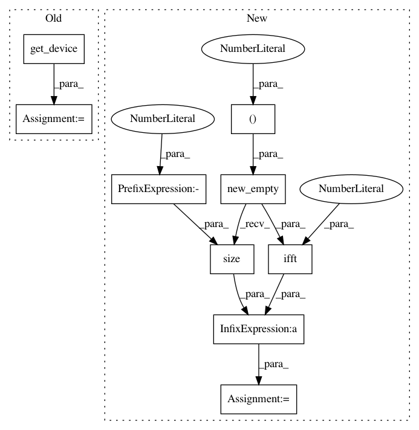

4cbe889c27f5a0c272c54b4e1065ef3525c2fc09,s2cnn/nn/soft/gpu/s2_fft.py,,_s2_ifft,#Any#Any#Any#Any#,81
Before Change
:param x: [l * m, batch, complex] (b_in**2, nbatch, 2)
:return: [batch, beta, alpha, complex] (nbatch, 2 b_out, 2 * b_out, 2)
"""
device = x.get_device()
nbatch = x.size(1)
plan = _setup_fft_plan(b_out, nbatch)
wigner = _setup_wigner(b_out, nl=b_in, weighted=for_grad, device=device) // [beta, l * m] (2 * b_out - 1, nspec)
After Change
cuda_kernel = _setup_s2ifft_cuda_kernel(b=b_out, nl=b_in, nbatch=nbatch)
stream = cuda_utils.Stream(ptr=torch.cuda.current_stream().cuda_stream)
output = x.new_empty((nbatch, 2 * b_out, 2 * b_out, 2))
cuda_kernel(block=(1024, 1, 1),
grid=(cuda_utils.get_blocks(nbatch * (2 * b_out)**2, 1024), 1, 1),
args=[x.data_ptr(), wigner.data_ptr(), output.data_ptr()],
stream=stream)
// [batch, beta, m, complex] (nbatch, 2 * b_out, 2 * b_out, 2)
output = torch.ifft(output, 1) * output.size(-2) // [batch, beta, alpha, complex]
return output
In pattern: SUPERPATTERN
Frequency: 3
Non-data size: 9
Instances
Project Name: jonas-koehler/s2cnn
Commit Name: 4cbe889c27f5a0c272c54b4e1065ef3525c2fc09
Time: 2018-05-02
Author: geiger.mario@gmail.com
File Name: s2cnn/nn/soft/gpu/s2_fft.py
Class Name:
Method Name: _s2_ifft
Project Name: jonas-koehler/s2cnn
Commit Name: 4cbe889c27f5a0c272c54b4e1065ef3525c2fc09
Time: 2018-05-02
Author: geiger.mario@gmail.com
File Name: s2cnn/nn/soft/gpu/so3_fft.py
Class Name:
Method Name: _so3_rifft
Project Name: jonas-koehler/s2cnn
Commit Name: 4cbe889c27f5a0c272c54b4e1065ef3525c2fc09
Time: 2018-05-02
Author: geiger.mario@gmail.com
File Name: s2cnn/nn/soft/gpu/so3_fft.py
Class Name:
Method Name: _so3_ifft